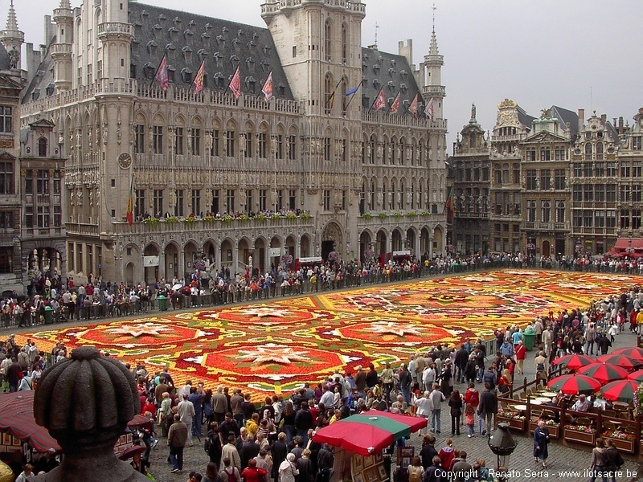

Retour à
l'index
La
Belgique
La Belgique est un Royaume de
l'Europe occidentale aux confins des Pays Bas, de l'Allemagne, du
Luxembourg
et de la France ayant comme capitale Bruxelles,
qui est le siège de la
Communauté Européene. Ses côtes longent
la Mer du Nord
où
il y a de hautes dunes. Le climat est
influencé par la mer, et il est continental. Le relief est
très bas, le point le plus haut est Botrange (692 m), et le
terrain est plat. La couleur dominante en Belgique est le vert, parce
que
le climat humide porté par les précipitations a
favorisé le développement des forêts. Les fleuves sont la ressource
la
plus importante de la Belgique, les plus
célèbres sont la Sambre et la Meuse avec tous leurs
affluents (la Basse, la Druthe); qui sont navigables. Il y a aussi une
petite ville appelée la Venise
du
Nord, Bruges, qui est traversée par
beaucoup de canaux.
Retour à
l'index